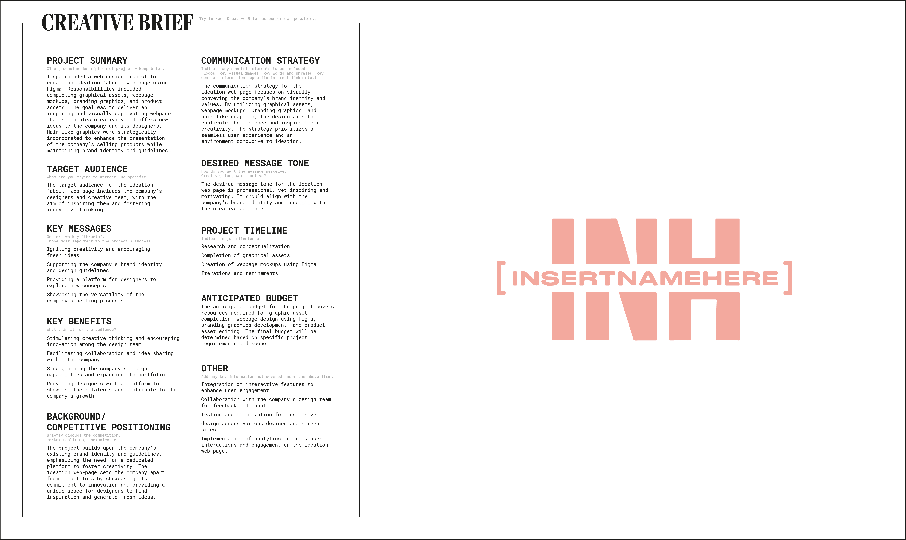

During my internship at "INSERT NAME HERE," a prominent hair solutions company, I had the opportunity to create a concept web page aimed at inspiring their design team. This experience allowed me to apply UI/UX principles in a real industry setting, gaining valuable insights into the process. "INH" values individuality, empowering customers to express themselves through their hair. Flowy hairlike graphics were strategically incorporated to enhance the presentation of the company's selling products while maintaining brand identity and guidelines.